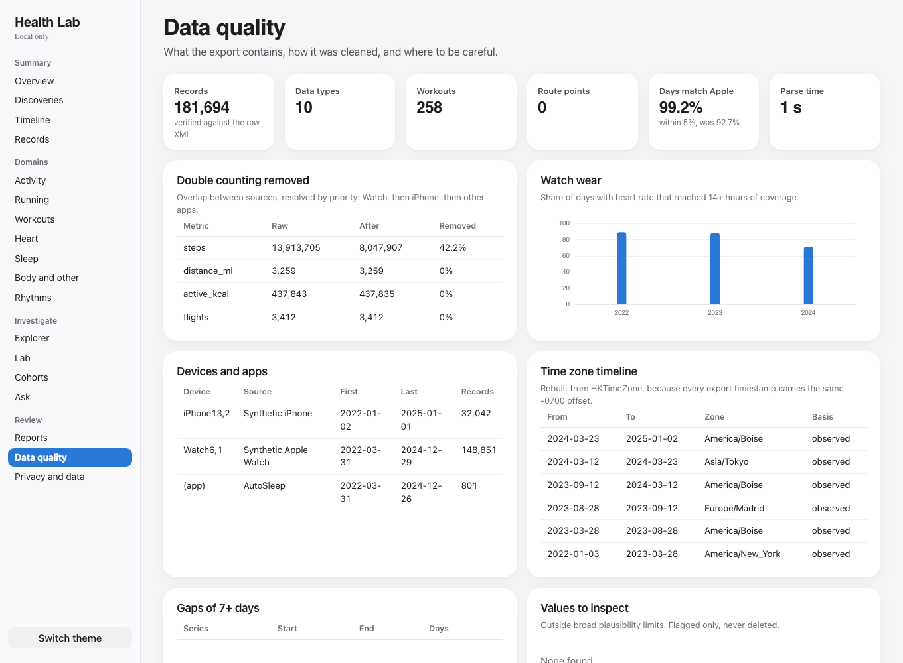
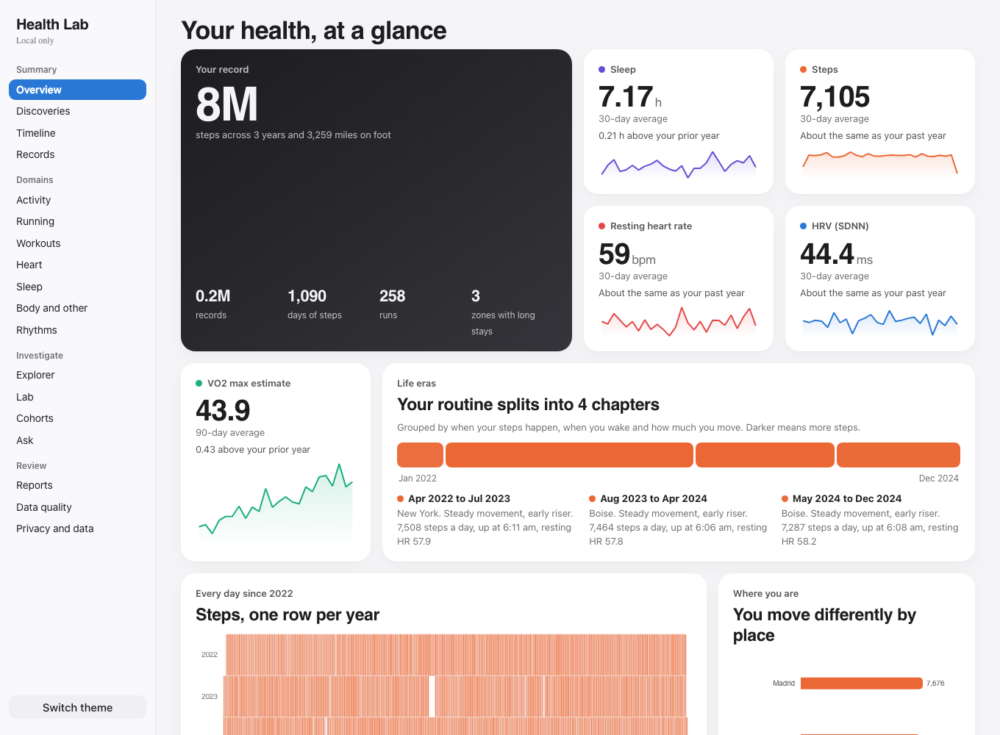

Data engineering · Python · Verification
health-export-lab
A local Apple Health analyzer that corrects what a raw export gets wrong, and checks each correction against an export whose right answers are known.
73%overcount in a plain step sum, removed exactly[E2]
13,913,705 steps summed; healthlab recovers the planted 8,047,907, and does so on 20 of 20 seeds[E1][E5]
Synthetic 1,095-day export with planted errors, seed 0; no real health data.
Total steps, seed 0 (synthetic)
Findings
Every correction is scored against planted truth#
Steps counted once, against a known total
iPhone and Watch log the same walking. Keeping the higher-priority device for each stretch of time lands on the planted total to the step.[E1] How overlap is removed
Each fix is guarded by a test
- Mutants killed
- 14 of 14
Reverting any one fix to its naive version makes a named test fail.[E6]
Local time rebuilt
- Days within 5% of Apple's total
- 99.2%
Against 92.6% when every timestamp is read at the export's −0700 offset.[E4]
Holds on 20 seeds
- Seeds with an exact step total
- 20 of 20
Rebuilt time beats the export offset on 20 of 20.[E5]
Parses large exports quickly
- 1 M records
- 5.7s
Median of 5 runs on an Apple M5 Pro, synthetic heart-rate records in a zip.[E8]
Result
A plain reading of the export gets every planted error wrong#
The test export comes from healthlab/synth.py, which writes an Apple Health zip in Apple's own element shape and records the right answer for every error it plants. That makes each correction scoreable: the plain reading, healthlab's reading and the truth sit side by side.
Each correction lands on, or within 0.8 pp of, the planted answer
How far from the planted answer is each reading?
Seed 0, 1,095 synthetic days. Dots: error of the plain reading (grey) and of healthlab (blue) against the value the generator planted. Whiskers: the plain reading's range over 20 seeds; healthlab's step and sleep errors are 0 on all 20 seeds. The three rows measure different things — a total, a mean per night, a share of days — so compare within a row.[E1][E4][E5]
Data: results/report.jsonShow data table
Error against planted truth (%)
| Measure | Plain reading | Range over 20 seeds | healthlab |
|---|---|---|---|
| Step total | 72.9% | 72.0%–74.8% | 0.0% |
| Sleep per Watch night | 16.6% | 16.5%–16.7% | 0.0% |
| Days off Apple's total by >5% | 7.4% | 4.3%–8.0% | 0.8% |
All seven planted errors
Seven planted errors, seed 0: plain reading, healthlab, planted truth
| Planted error | Plain reading | healthlab | Planted truth |
|---|---|---|---|
| iPhone and Watch count the same steps | 13,913,705 steps | 8,047,907 | 8,047,907 |
| Every timestamp carries the −0700 export offset | 92.6% of days within 5% | 99.2% | 100% |
| Three sources score each Watch night | 8.14 h (longest source) | 6.98 h | 6.98 h |
| Days with no data at all | 5 days of 0 steps | 5 days unknown | 5 unknown days |
| Older runs keep a few heart-rate samples | 124 runs averaged from a median 4 samples | 124 left blank | 124 with no reliable average |
| Zones change with a move, two trips and an alias | 1 zone (−0700 throughout) | 6 zone segments | 6 tagged eras + 1 untagged |
| Watch worn only part of the day | 113 partial days counted as worn | 113 excluded | 113 partial days |
Seven planted errors, seed 0: plain reading, healthlab, planted truth
- iPhone and Watch count the same steps
- Plain reading: 13,913,705 steps. healthlab: 8,047,907. Truth: 8,047,907.
- Every timestamp carries the −0700 export offset
- Plain reading: 92.6% of days within 5%. healthlab: 99.2%. Truth: 100%.
- Three sources score each Watch night
- Plain reading: 8.14 h (longest source). healthlab: 6.98 h. Truth: 6.98 h.
- Days with no data at all
- Plain reading: 5 days of 0 steps. healthlab: 5 days unknown. Truth: 5 unknown days.
- Older runs keep a few heart-rate samples
- Plain reading: 124 runs averaged from a median 4 samples. healthlab: 124 left blank. Truth: 124 with no reliable average.
- Zones change with a move, two trips and an alias
- Plain reading: 1 zone (−0700 throughout). healthlab: 6 zone segments. Truth: 6 tagged eras + 1 untagged.
- Watch worn only part of the day
- Plain reading: 113 partial days counted as worn. healthlab: 113 excluded. Truth: 113 partial days.
Seven planted errors, seed 0: plain reading, healthlab, planted truth
- iPhone and Watch count the same steps
- Plain reading: 13,913,705 steps. healthlab: 8,047,907. Truth: 8,047,907.
- Every timestamp carries the −0700 export offset
- Plain reading: 92.6% of days within 5%. healthlab: 99.2%. Truth: 100%.
- Three sources score each Watch night
- Plain reading: 8.14 h (longest source). healthlab: 6.98 h. Truth: 6.98 h.
- Days with no data at all
- Plain reading: 5 days of 0 steps. healthlab: 5 days unknown. Truth: 5 unknown days.
- Older runs keep a few heart-rate samples
- Plain reading: 124 runs averaged from a median 4 samples. healthlab: 124 left blank. Truth: 124 with no reliable average.
- Zones change with a move, two trips and an alias
- Plain reading: 1 zone (−0700 throughout). healthlab: 6 zone segments. Truth: 6 tagged eras + 1 untagged.
- Watch worn only part of the day
- Plain reading: 113 partial days counted as worn. healthlab: 113 excluded. Truth: 113 partial days.
Mechanism
Overlapping devices are counted once, in priority order#
A sample that is only partly covered keeps its uncovered share, assuming steps fall evenly across the sample. Summed over 1,095 days, that rule lands exactly on the planted step total.[E1]
Priority order: healthlab/build.py:35. A test compares every stable day's steps with the planted value.[E3]
Time zones
Rebuilt local time matches Apple's daily totals on 99.2% of days#
The export offset is off in 119 of 144 weeks; rebuilt local time in 6
Does cutting days at the rebuilt local time match Apple's own daily totals?
Weekly mean of the absolute daily difference between Apple's ring total (keyed by the true local date) and the day's hourly active energy, on 968 days with a ring total; seed 0, synthetic. Dashed lines: the 6 zone changes; 5 of the 6 weeks with any rebuilt-time error end within 10 days of one. 8 of the 8 days rebuilt time misses by more than 5% fall within 2 days of a zone change, which tags place only to within about a day.[E4]
Data: results/report.jsonShow data table
Weekly mean daily error (kcal)
| Week ending | Export offset | Rebuilt |
|---|---|---|
| 2022-04-03 | 3.3 | 0.0 |
| 2022-04-10 | 1.4 | 0.0 |
| 2022-04-17 | 4.0 | 0.0 |
| 2022-04-24 | 3.6 | 0.0 |
| 2022-05-01 | 3.1 | 0.0 |
| 2022-05-08 | 1.4 | 0.0 |
| 2022-05-15 | 2.0 | 0.0 |
| 2022-05-22 | 3.7 | 0.0 |
| 2022-05-29 | 3.4 | 0.0 |
| 2022-06-05 | 3.6 | 0.0 |
| 2022-06-12 | 2.2 | 0.0 |
| 2022-06-19 | 3.2 | 0.0 |
| 2022-06-26 | 3.0 | 0.0 |
| 2022-07-03 | 3.4 | 0.0 |
| 2022-07-10 | 1.6 | 0.0 |
| 2022-07-17 | 1.4 | 0.0 |
| 2022-07-24 | 4.2 | 0.0 |
| 2022-07-31 | 1.7 | 0.0 |
| 2022-08-07 | 4.6 | 0.0 |
| 2022-08-14 | 3.5 | 0.0 |
| 2022-08-21 | 2.9 | 0.0 |
| 2022-08-28 | 4.3 | 0.0 |
| 2022-09-04 | 2.8 | 0.0 |
| 2022-09-11 | 1.6 | 0.0 |
| 2022-09-18 | 1.5 | 0.0 |
| 2022-09-25 | 3.1 | 0.0 |
| 2022-10-02 | 2.7 | 0.0 |
| 2022-10-09 | 1.8 | 0.0 |
| 2022-10-16 | 2.0 | 0.0 |
| 2022-10-23 | 1.9 | 0.0 |
| 2022-10-30 | 1.8 | 0.0 |
| 2022-11-06 | 4.2 | 0.0 |
| 2022-11-13 | 2.0 | 0.0 |
| 2022-11-20 | 2.3 | 0.0 |
| 2022-11-27 | 2.2 | 0.0 |
| 2022-12-04 | 1.6 | 0.0 |
| 2022-12-11 | 2.0 | 0.0 |
| 2022-12-18 | 2.9 | 0.0 |
| 2022-12-25 | 1.3 | 0.0 |
| 2023-01-01 | 2.2 | 0.0 |
| 2023-01-08 | 1.0 | 0.0 |
| 2023-01-15 | 1.6 | 0.0 |
| 2023-01-22 | 2.9 | 0.0 |
| 2023-01-29 | 2.7 | 0.0 |
| 2023-02-05 | 1.5 | 0.0 |
| 2023-02-12 | 1.8 | 0.0 |
| 2023-02-19 | 2.2 | 0.0 |
| 2023-02-26 | 2.7 | 0.0 |
| 2023-03-05 | 2.1 | 0.0 |
| 2023-03-12 | 3.2 | 0.7 |
| 2023-03-19 | 4.1 | 0.0 |
| 2023-03-26 | 3.6 | 0.0 |
| 2023-04-02 | 0.6 | 6.4 |
| 2023-04-09 | 1.6 | 0.0 |
| 2023-04-16 | 1.4 | 0.0 |
| 2023-04-23 | 2.0 | 0.0 |
| 2023-04-30 | 1.3 | 0.0 |
| 2023-05-07 | 0.9 | 0.0 |
| 2023-05-14 | 1.6 | 0.0 |
| 2023-05-21 | 1.5 | 0.0 |
| 2023-05-28 | 1.5 | 0.0 |
| 2023-06-04 | 2.2 | 0.0 |
| 2023-06-11 | 1.1 | 0.0 |
| 2023-06-18 | 1.8 | 0.0 |
| 2023-06-25 | 1.6 | 0.0 |
| 2023-07-02 | 1.3 | 0.0 |
| 2023-07-09 | 1.4 | 0.0 |
| 2023-07-16 | 0.6 | 0.0 |
| 2023-07-23 | 1.7 | 0.0 |
| 2023-07-30 | 1.0 | 0.0 |
| 2023-08-06 | 1.2 | 0.0 |
| 2023-08-13 | 1.1 | 0.0 |
| 2023-08-20 | 1.3 | 0.0 |
| 2023-08-27 | 1.3 | 0.0 |
| 2023-09-03 | 29.8 | 0.0 |
| 2023-09-10 | 30.5 | 0.0 |
| 2023-09-17 | 2.1 | 47.3 |
| 2023-09-24 | 2.4 | 0.0 |
| 2023-10-01 | 1.1 | 0.0 |
| 2023-10-08 | 1.0 | 0.0 |
| 2023-10-15 | 1.3 | 0.0 |
| 2023-10-22 | 1.1 | 0.0 |
| 2023-10-29 | 1.4 | 0.0 |
| 2023-11-05 | 1.9 | 0.0 |
| 2023-11-12 | 0.0 | 0.0 |
| 2023-11-19 | 0.0 | 0.0 |
| 2023-11-26 | 0.0 | 0.0 |
| 2023-12-03 | 0.0 | 0.0 |
| 2023-12-10 | 0.0 | 0.0 |
| 2023-12-17 | 0.0 | 0.0 |
| 2023-12-24 | 0.0 | 0.0 |
| 2023-12-31 | 0.0 | 0.0 |
| 2024-01-07 | 0.0 | 0.0 |
| 2024-01-14 | 0.0 | 0.0 |
| 2024-01-21 | 0.0 | 0.0 |
| 2024-01-28 | 0.0 | 0.0 |
| 2024-02-04 | 0.0 | 0.0 |
| 2024-02-11 | 0.0 | 0.0 |
| 2024-02-18 | 0.0 | 0.0 |
| 2024-02-25 | 0.0 | 0.0 |
| 2024-03-03 | 0.0 | 0.0 |
| 2024-03-10 | 0.1 | 0.4 |
| 2024-03-17 | 171.5 | 47.9 |
| 2024-03-24 | 21.8 | 105.8 |
| 2024-03-31 | 1.8 | 0.0 |
| 2024-04-07 | 1.7 | 0.0 |
| 2024-04-14 | 0.8 | 0.0 |
| 2024-04-21 | 0.7 | 0.0 |
| 2024-04-28 | 0.7 | 0.0 |
| 2024-05-05 | 1.3 | 0.0 |
| 2024-05-12 | 1.6 | 0.0 |
| 2024-05-19 | 0.7 | 0.0 |
| 2024-05-26 | 1.6 | 0.0 |
| 2024-06-02 | 0.7 | 0.0 |
| 2024-06-09 | 0.7 | 0.0 |
| 2024-06-16 | 0.9 | 0.0 |
| 2024-06-23 | 1.5 | 0.0 |
| 2024-06-30 | 2.2 | 0.0 |
| 2024-07-07 | 1.6 | 0.0 |
| 2024-07-14 | 1.4 | 0.0 |
| 2024-07-21 | 2.0 | 0.0 |
| 2024-07-28 | 2.1 | 0.0 |
| 2024-08-04 | 1.2 | 0.0 |
| 2024-08-11 | 1.8 | 0.0 |
| 2024-08-18 | 1.4 | 0.0 |
| 2024-08-25 | 2.0 | 0.0 |
| 2024-09-01 | 1.8 | 0.0 |
| 2024-09-08 | 2.4 | 0.0 |
| 2024-09-15 | 1.3 | 0.0 |
| 2024-09-22 | 1.1 | 0.0 |
| 2024-09-29 | 2.5 | 0.0 |
| 2024-10-06 | 1.7 | 0.0 |
| 2024-10-13 | 1.6 | 0.0 |
| 2024-10-20 | 1.3 | 0.0 |
| 2024-10-27 | 1.6 | 0.0 |
| 2024-11-03 | 1.0 | 0.0 |
| 2024-11-10 | 0.0 | 0.0 |
| 2024-11-17 | 0.0 | 0.0 |
| 2024-11-24 | 0.0 | 0.0 |
| 2024-12-01 | 0.0 | 0.0 |
| 2024-12-08 | 0.0 | 0.0 |
| 2024-12-15 | 0.0 | 0.0 |
| 2024-12-22 | 0.0 | 0.0 |
| 2024-12-29 | 0.0 | 0.0 |
Every record in an export carries the offset in force on the day of export, here −0700, whatever zone it was recorded in. Reading it literally shifts each day's cut-off by the difference, so evening activity lands on the next day. healthlab rebuilds the zone from HKTimeZone metadata, merges aliases such as US/Eastern, and applies each hour's own DST offset.
The flat stretches where both lines sit at zero (25 weeks) are winters in America/Boise, where standard time is −0700 and the literal reading happens to be right.
Robustness
The corrections hold on 20 synthetic seeds#
Rebuilt time beats the export offset on 20 of 20 seeds
Do the results depend on the one seed shown above?
One dot per seed (0–19), 1,095 synthetic days each; dots are spread vertically only to keep them visible. The axis is truncated because these are dots, not bars.[E5]
Data: results/seeds.jsonKey numbers over 20 synthetic seeds
| Measure | Median | Range |
|---|---|---|
| Plain-sum step overcount | 73.3% | 72.0%–74.8% |
| Days within 5%, export offset | 93.2% | 92.0%–95.7% |
| Days within 5%, rebuilt local time | 99.1% | 99.0%–99.4% |
| Sleep overstatement, longest source | 16.6% | 16.5%–16.7% |
| Pre-listed tests surviving q ≤ 0.10 | 4 | 4–6 |
Key numbers over 20 synthetic seeds
| Measure | Median | Range |
|---|---|---|
| Plain-sum step overcount | 73.3% | 72.0%–74.8% |
| Days within 5%, export offset | 93.2% | 92.0%–95.7% |
| Days within 5%, rebuilt local time | 99.1% | 99.0%–99.4% |
| Sleep overstatement, longest source | 16.6% | 16.5%–16.7% |
| Pre-listed tests surviving q ≤ 0.10 | 4 | 4–6 |
Key numbers over 20 synthetic seeds
- Plain-sum step overcount
- median 73.3%, range 72.0%–74.8%
- Days within 5%, export offset
- median 93.2%, range 92.0%–95.7%
- Days within 5%, rebuilt local time
- median 99.1%, range 99.0%–99.4%
- Sleep overstatement, longest source
- median 16.6%, range 16.5%–16.7%
- Pre-listed tests surviving q ≤ 0.10
- median 4, range 4–6
Test strength
Reverting any one of 14 fixes makes its test fail#
scripts/mutation_check.py patches one fix back to its naive version in a scratch copy of the repo, runs the named test from tests/test_traps.py, and records whether it failed. 14 fixes, 13 tests (one test guards 2 fixes); CI runs it on every push.[E6]
14 of 14 mutants killed
| Fix reverted | File | Test that fails | Result |
|---|---|---|---|
| Use the export offset for every hour | healthlab/build.py | test_local_time_is_rebuilt_from_zone_tags_not_the_export_offset | killed |
| One fixed offset per zone, ignoring DST | healthlab/build.py | test_each_hour_uses_its_own_dst_offset | killed |
| Treat zone aliases as different places | healthlab/build.py | test_zone_aliases_merge_into_one_place | killed |
| Present untagged days as observed | healthlab/build.py | test_days_before_the_first_zone_tag_are_marked_assumed | killed |
| Sum steps across sources | healthlab/build.py | test_iphone_and_watch_steps_are_not_double_counted | killed |
| Fill missing days with zero | healthlab/build.py | test_a_day_without_samples_is_null_not_zero | killed |
| Longest sleep source wins | healthlab/build.py | test_one_sleep_source_per_night_named_and_never_blended | killed |
| Key a night by the date it started | healthlab/build.py | test_one_sleep_source_per_night_named_and_never_blended | killed |
| Match device names on a plain space | healthlab/build.py | test_device_names_with_a_non_breaking_space_still_match | killed |
| Hard-code the sleep tracking dates | healthlab/insights.py | test_sleep_tracking_and_stage_dates_come_from_the_data | killed |
| Count any heart-rate hour as a worn day | healthlab/build.py | test_partial_wear_days_are_not_treated_as_worn | killed |
| Average a handful of workout samples | healthlab/build.py | test_sparse_workout_heart_rate_is_left_blank | killed |
| Count Correlation members as samples | healthlab/parse.py | test_correlation_members_are_not_counted_as_samples | killed |
| Append every import without matching | healthlab/build.py | test_importing_an_overlapping_export_again_adds_nothing | killed |
14 of 14 mutants killed
- Use the export offset for every hour
- Killed by
test_local_time_is_rebuilt_from_zone_tags_not_the_export_offset - One fixed offset per zone, ignoring DST
- Killed by
test_each_hour_uses_its_own_dst_offset - Treat zone aliases as different places
- Killed by
test_zone_aliases_merge_into_one_place - Present untagged days as observed
- Killed by
test_days_before_the_first_zone_tag_are_marked_assumed - Sum steps across sources
- Killed by
test_iphone_and_watch_steps_are_not_double_counted - Fill missing days with zero
- Killed by
test_a_day_without_samples_is_null_not_zero - Longest sleep source wins
- Killed by
test_one_sleep_source_per_night_named_and_never_blended - Key a night by the date it started
- Killed by
test_one_sleep_source_per_night_named_and_never_blended - Match device names on a plain space
- Killed by
test_device_names_with_a_non_breaking_space_still_match - Hard-code the sleep tracking dates
- Killed by
test_sleep_tracking_and_stage_dates_come_from_the_data - Count any heart-rate hour as a worn day
- Killed by
test_partial_wear_days_are_not_treated_as_worn - Average a handful of workout samples
- Killed by
test_sparse_workout_heart_rate_is_left_blank - Count Correlation members as samples
- Killed by
test_correlation_members_are_not_counted_as_samples - Append every import without matching
- Killed by
test_importing_an_overlapping_export_again_adds_nothing
14 of 14 mutants killed
- Use the export offset for every hour
- Killed by
test_local_time_is_rebuilt_from_zone_tags_not_the_export_offset - One fixed offset per zone, ignoring DST
- Killed by
test_each_hour_uses_its_own_dst_offset - Treat zone aliases as different places
- Killed by
test_zone_aliases_merge_into_one_place - Present untagged days as observed
- Killed by
test_days_before_the_first_zone_tag_are_marked_assumed - Sum steps across sources
- Killed by
test_iphone_and_watch_steps_are_not_double_counted - Fill missing days with zero
- Killed by
test_a_day_without_samples_is_null_not_zero - Longest sleep source wins
- Killed by
test_one_sleep_source_per_night_named_and_never_blended - Key a night by the date it started
- Killed by
test_one_sleep_source_per_night_named_and_never_blended - Match device names on a plain space
- Killed by
test_device_names_with_a_non_breaking_space_still_match - Hard-code the sleep tracking dates
- Killed by
test_sleep_tracking_and_stage_dates_come_from_the_data - Count any heart-rate hour as a worn day
- Killed by
test_partial_wear_days_are_not_treated_as_worn - Average a handful of workout samples
- Killed by
test_sparse_workout_heart_rate_is_left_blank - Count Correlation members as samples
- Killed by
test_correlation_members_are_not_counted_as_samples - Append every import without matching
- Killed by
test_importing_an_overlapping_export_again_adds_nothing
Statistics
On seed 0, 4 of 33 pre-listed tests survive, all the planted effect#
The discovery step runs a fixed list of 33 cross-metric tests on detrended, deseasonalised series and corrects all of them together with Benjamini–Hochberg, nulls included. The generator plants one effect: resting heart rate 2 bpm lower (mean) in the 2 days after a run (healthlab/synth.py:217).
Tests surviving q ≤ 0.10, seed 0
| Exposure | Outcome | Lag | r | q |
|---|---|---|---|---|
| run distance | resting heart rate | 1 day | -0.29 | 4.4e-15 |
| run distance | resting heart rate | 2 days | -0.35 | 1.4e-20 |
| workout minutes | resting heart rate | 1 day | -0.29 | 4.4e-15 |
| active energy (worn days) | resting heart rate | 1 day | -0.28 | 9.2e-12 |
Tests surviving q ≤ 0.10, seed 0
| Exposure | Outcome | Lag | r | q |
|---|---|---|---|---|
| run distance | resting heart rate | 1 day | -0.29 | 4.4e-15 |
| run distance | resting heart rate | 2 days | -0.35 | 1.4e-20 |
| workout minutes | resting heart rate | 1 day | -0.29 | 4.4e-15 |
| active energy (worn days) | resting heart rate | 1 day | -0.28 | 9.2e-12 |
Tests surviving q ≤ 0.10, seed 0
- run distance → resting heart rate
- lag 1 day, r = -0.29, q = 4.4e-15
- run distance → resting heart rate
- lag 2 days, r = -0.35, q = 1.4e-20
- workout minutes → resting heart rate
- lag 1 day, r = -0.29, q = 4.4e-15
- active energy (worn days) → resting heart rate
- lag 1 day, r = -0.28, q = 9.2e-12
All 4 are exercise followed by lower resting heart rate. Over 20 seeds, 4 planted-effect tests survive on every seed. On 6 of 20 seeds, 1–2 other tests also pass, all weak (|r| ≤ 0.15); a 10% false-discovery threshold allows that. A test now fails if the seed-0 family changes.[E7]
How it works
The export is parsed once, corrected in three stages, then tested#
Five stages from export zip to tested findings
healthlab/parse.py streams export.xml out of the zip with lxml's iterparse and writes Parquet; build.py loads it into DuckDB and does stages 2–4; insights.py stage 5. The parse stage handled 1,000,000 records in 5.7 s here.[E8]
The Data quality view shows each correction on the user's own export

Screenshot of the local web app (FastAPI + static JS) on the synthetic demo export. Its “Removed” column is the share of the plain sum dropped, not the overcount relative to truth. Its “Days match Apple” tile scores a slightly different set of days than scripts/report.py, so it can differ from the figures above in the last digit.
The overview reads only corrected tables

Same app and synthetic export. Served on 127.0.0.1 only; the original export is never modified.
Conditions
Methodology#
- Data
- Synthetic Apple Health export from healthlab/synth.py: 1,095 days (2022-01-03 to 2025-01-01), seed 0 in detail, seeds 0–19 for ranges. No real health data.
- Truth
- Written by the generator beside each export (truth.json): planted step total, sleep per night, zones, gaps, wear.
- Pipeline runs
- python 3.11.1, DuckDB 2.0.0, pandas 3.1.1, macOS-27.0.1 arm64; run 2026-11-23 at code c67b786
- Time-zone score
- 968 days with an Apple ring total; a day matches when |hourly sum − ring total| ≤ 5% of the ring total
- Mutation check
- 14 one-line patches, each run against its named test (results/mutants.json)
- Parse timing
- 1,000,000 synthetic heart-rate records from tests/synthetic.bulk, zipped (10 MiB zip, 425 MiB XML); time.perf_counter around parse.ingest; 5 repetitions, median 5.70 s, range 5.29–6.42 s
- Timing hardware
- Apple M5 Pro, 15 cores, 48 GiB, macOS-27.0.1; python 3.11.1
- Load average
- 6.44 / 5.65 / 6.19 before, 5.55 / 5.50 / 6.12 after (1 / 5 / 15 min); shared machine, timing runs serialised with a lock
- Timing run date
- 2026-11-23
Limitations
Results cover synthetic exports from one generator#
- Synthetic data only. Every number here comes from generated exports; real exports carry device and app quirks the generator does not plant, so exactness on real data is not measured.
- The generator and the fixes share an author. Each trap is planted in the form the fix expects; a different overlap pattern (for example a third step source) is untested.
- Zone changes are placed to within about a day. 8 of 8 rebuilt-time misses sit within 2 days of a zone change.
- Even-rate assumption. A partly covered sample keeps a share proportional to time, which is exact for the generator's uniform samples and approximate on real ones.
- One machine for timing. The parse time is from one Apple M5 Pro under load 6.44 / 5.65 / 6.19; it is shown as a scale, not a benchmark against other tools.
- Rule-based questions. The app's question box matches a fixed set of question shapes; it is not a language model.
Python 3.11 virtualenv with pinned dependencies, then the test suite (includes the trap tests).
make setup make testMutation check: rewrites results/mutants.json and exits non-zero if any mutant survives.
make mutantsRerun the synthetic experiment: seed 0 in detail, then seeds 0–19; rewrites results/report.json and results/seeds.json.
.venv/bin/python scripts/report.py .venv/bin/python scripts/report.py --seeds 20Time the parser on 1,000,000 records (5 repetitions).
.venv/bin/python scripts/bench_parse.pyRebuild this page, site/card.json and the README highlights from results/ (standard library only).
make reportTry the app on the synthetic export, or on your own export from the Health app.
make demo # http://127.0.0.1:8877 ./run.sh ~/Downloads/export.zip
Sources
Every number traces to a committed file#
Evidence ledger
| ID | Claim | Source | Class |
|---|---|---|---|
| E1 | Plain sum 13,913,705 steps; healthlab 8,047,907; planted truth 8,047,907 (seed 0) | results/report.json → steps | Verified |
| E2 | Plain sum overstates steps by 72.9% of the planted total | (plain − truth) ÷ truth from E1 | Derived |
| E3 | A test fails if any day's steps differ from the planted value | tests/test_traps.py:66–71 | Verified |
| E4 | Days within 5% of Apple's total: 92.6% with the export offset, 99.2% rebuilt | results/report.json → time | Verified |
| E5 | Across 20 seeds: steps exact on 20; rebuilt time 99.0%–99.4% | results/seeds.json | Verified |
| E6 | 14 of 14 mutants killed by the trap tests | results/mutants.json; CI runs make mutants | Verified |
| E7 | 4 of 33 pre-listed tests survive q ≤ 0.10, all exercise → resting heart rate | results/report.json; tests/test_traps.py:153–156 | Verified |
| E8 | 1,000,000 records parsed in 5.70 s, median of 5 | results/parse_bench.json | Verified |
| E9 | Overlap removed interval by interval in source priority order | healthlab/build.py:104–121 | Verified |